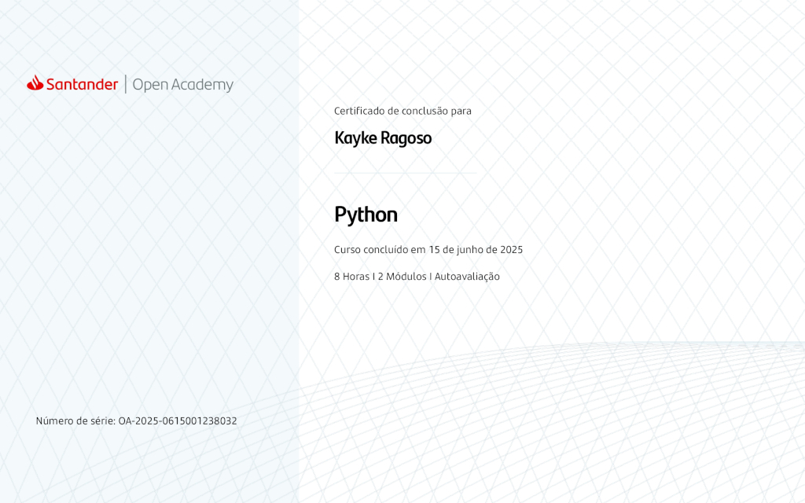

Linguagens, Frameworks e Ferramentas que domino

HTML5

CSS3

JavaScript

Java

React.Js

GitHub

Git

Python
Meus Projetos

ConectCliente - Sistema de gestão para atendimento ao cliente

DroneWise - Monitoramento inteligente com drones

Tourism Rio - Guia turístico digital para o RJ
Meus Certificados

Unity - Unity Essentials Pathway

Santander - Python